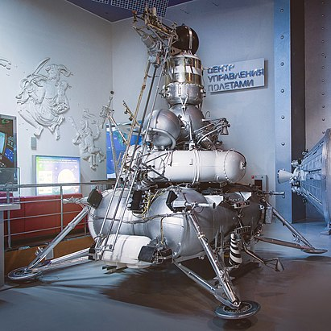
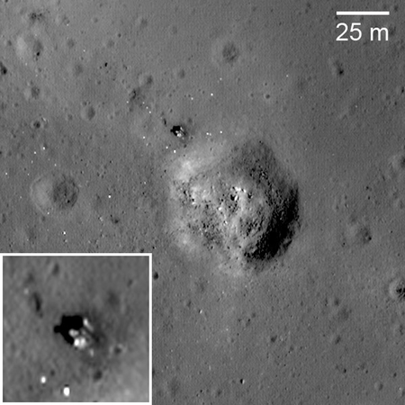

Луна-24
«Луна-24» — последняя советская автоматическая межпланетная станция для изучения Луны, забора и доставки лунного грунта на Землю. Станция была запущена с космодрома Байконур 9 августа 1976 года. В результате анализа результатов этого полёта было впервые получено убедительное доказательство наличия на Луне воды. Выводы о наличии воды были независимо подтверждены в 1990-х годах в американских проектах Клементина (1994) и Lunar Prospector (1998).

Автоматическая межпланетная станция Е-8-5М № 413
Хронология
- 9 августа 1976 года осуществлён пуск ракеты-носителя «Протон-К / Д», которая вывела на траекторию полёта к Луне АМС «Луна-24».
- 11 августа осуществлена коррекция траектории полёта станции.
- 13 августа станция «Луна-24» выведена на орбиту вокруг Луны с параметрами: наклонение орбиты — 120°; период обращения — 119 минут; высота над поверхностью Луны — 115 километров.
- 18 августа «Луна-24» совершила мягкую посадку на Луну в юго-восточном районе Моря Кризисов в точке с координатами 12 градусов 45 минут с. ш. и 62 градуса 12 минут в. д. Через 15 минут после посадки по команде с Земли было включено грунтозаборное устройство. В процессе забора грунта до глубины 120 сантиметров использовался режим вращательного бурения, а далее происходила смена способов бурения — с вращательного на ударно-вращательный. Общая глубина бурения составила 225 сантиметров. В связи с тем, что оно проводилось с наклоном, общее заглубление составило около 2 метров.
- 19 августа с поверхности Луны стартовала взлётная ступень станции «Луна-24» с образцами лунного грунта.
- 22 августа в 200 километрах юго-восточнее Сургута (Тюменская область) у административной границы с Томской областью совершил посадку спускаемый аппарат. На Землю была доставлена колонка лунного грунта длиной около 160 сантиметров и весом 170 граммов.

«Луна-24» на снимке зонда
Посадочная ступень «Луны-24» обнаружена исследователями на снимках LRO в марте 2010 года [3][4] в 2,3 км от «Луны-23» (которая лежит на боку).
Материал из Википедии